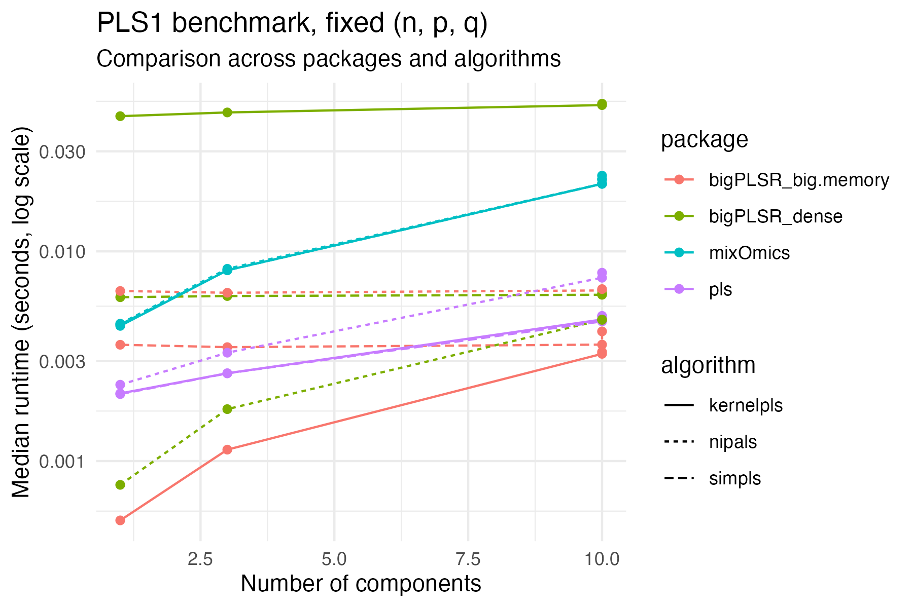
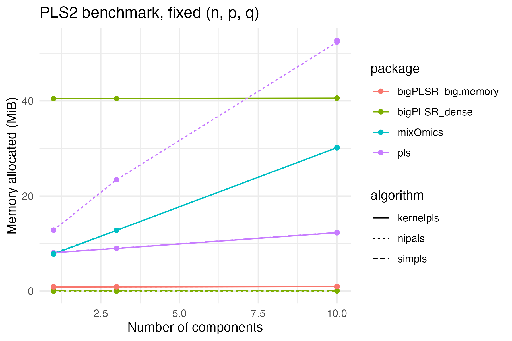

Benchmarking bigPLSR against external PLS implementations
Frédéric Bertrand
Cedric, Cnam, Parisfrederic.bertrand@lecnam.net
2025-11-18
Source:vignettes/external-pls-benchmarks-short.Rmd
external-pls-benchmarks-short.Rmd
knitr::opts_chunk$set(
collapse = TRUE,
comment = "#>",
fig.path = "figures/benchmark-short-",
fig.width = 6,
fig.height = 4,
dpi = 150,
message = FALSE,
warning = FALSE
)
LOCAL <- identical(Sys.getenv("LOCAL"), "TRUE")Overview
This vignette documents how the bigPLSR implementations
compare to external partial least squares (PLS) libraries in terms of
runtime and memory use, using the pre computed dataset
external_pls_benchmarks.
The goals are:
- to summarise the benchmark design,
- to visualise runtime and memory behaviour for comparable problem sizes,
- to provide short comments that can be reused in papers or reports.
Benchmark design
The dataset external_pls_benchmarks is a data frame that
contains benchmark results for both PLS1 and PLS2 problems and several
algorithms.
library(bigPLSR)
library(ggplot2)
library(dplyr)
library(tidyr)
data("external_pls_benchmarks", package = "bigPLSR")
str(external_pls_benchmarks)
#> 'data.frame': 384 obs. of 11 variables:
#> $ task : chr "pls1" "pls1" "pls1" "pls1" ...
#> $ algorithm : chr "simpls" "simpls" "simpls" "simpls" ...
#> $ package : chr "bigPLSR_dense" "bigPLSR_big.memory" "pls" "mixOmics" ...
#> $ median_time_s : num 0.00605 0.00359 0.00209 0.00448 0.04412 ...
#> $ itr_per_sec : num 165.2 275.9 469.9 223.4 22.7 ...
#> $ mem_alloc_bytes: num 104720 895872 7479024 7550384 42461256 ...
#> $ n : num 1000 1000 1000 1000 1000 1000 1000 1000 100 100 ...
#> $ p : num 100 100 100 100 100 100 100 100 5000 5000 ...
#> $ q : num 1 1 1 1 1 1 1 1 1 1 ...
#> $ ncomp : num 1 1 1 1 1 1 1 1 1 1 ...
#> $ notes : chr "Run via pls_fit() with dense backend" "Run via pls_fit() with big.memory backend" "Requires the pls package" "Requires the mixOmics package" ...The main columns are:
-
task:"pls1"or"pls2", -
algorithm: one of"simpls","nipals","kernelpls","widekernelpls", -
package: implementation provider (for example"bigPLSR","pls","mixOmics"), -
median_time_s: median runtime in seconds reported bybench::mark, -
itr_per_sec: iterations per second, -
mem_alloc_bytes: memory allocated in bytes, -
n,p,q: number of observations, predictors and responses, -
ncomp: number of components, -
notes: optional free text description.
For most plots in this vignette we focus on configurations that are
directly comparable, namely fixed task, n,
p, q and ncomp.
Helper summaries
We start with a compact summary that reports the best implementation for each configuration in terms of runtime and memory.
summ_best <- external_pls_benchmarks %>%
group_by(task, n, p, q, ncomp) %>%
mutate(
rank_time = rank(median_time_s, ties.method = "min"),
rank_mem = rank(mem_alloc_bytes, ties.method = "min")
) %>%
ungroup()
best_time <- summ_best %>%
filter(rank_time == 1L) %>%
count(task, package, algorithm, name = "n_best_time")
best_mem <- summ_best %>%
filter(rank_mem == 1L) %>%
count(task, package, algorithm, name = "n_best_mem")
best_time
#> # A tibble: 4 × 4
#> task package algorithm n_best_time
#> <chr> <chr> <chr> <int>
#> 1 pls1 bigPLSR_big.memory kernelpls 7
#> 2 pls1 bigPLSR_big.memory widekernelpls 7
#> 3 pls2 bigPLSR_big.memory kernelpls 12
#> 4 pls2 bigPLSR_big.memory widekernelpls 12
best_mem
#> # A tibble: 4 × 4
#> task package algorithm n_best_mem
#> <chr> <chr> <chr> <int>
#> 1 pls1 bigPLSR_big.memory widekernelpls 8
#> 2 pls1 bigPLSR_dense nipals 8
#> 3 pls2 bigPLSR_big.memory widekernelpls 16
#> 4 pls2 bigPLSR_dense nipals 16These two tables indicate in how many configurations a given
combination package + algorithm comes out as the fastest or
the most memory efficient.
Example: PLS1, fixed size, varying components
In order to avoid mixing problem sizes, we select a single PLS1 configuration and plot runtime and memory as functions of the number of components. You can adjust the filters below to match the sizes of interest for your work.
example_pls1 <- external_pls_benchmarks %>%
filter(task == "pls1") %>%
group_by(n, p, q) %>%
filter(n == first(n), p == first(p), q == first(q)) %>%
ungroup()
example_pls1_size <- example_pls1 %>%
count(n, p, q, sort = TRUE) %>%
slice(1L) %>%
select(n, p, q)
example_pls1 <- external_pls_benchmarks %>%
semi_join(example_pls1_size, by = c("n", "p", "q")) %>%
filter(task == "pls1")Runtime comparison for this fixed size:
ggplot(example_pls1,
aes(x = ncomp, y = median_time_s,
colour = package, linetype = algorithm)) +
geom_line() +
geom_point() +
scale_y_log10() +
labs(
x = "Number of components",
y = "Median runtime (seconds, log scale)",
title = "PLS1 benchmark, fixed (n, p, q)",
subtitle = "Comparison across packages and algorithms"
) +
theme_minimal()
Memory use for the same configuration:
ggplot(example_pls1,
aes(x = ncomp, y = mem_alloc_bytes / 1024^2,
colour = package, linetype = algorithm)) +
geom_line() +
geom_point() +
labs(
x = "Number of components",
y = "Memory allocated (MiB)",
title = "PLS1 benchmark, fixed (n, p, q)"
) +
theme_minimal()
These figures are exported as SVG by default, so they can be included directly in LaTeX or HTML documents.
Example: PLS2, fixed size, varying components
We repeat the same idea for a PLS2 setting.
example_pls2 <- external_pls_benchmarks %>%
filter(task == "pls2") %>%
group_by(n, p, q) %>%
filter(n == first(n), p == first(p), q == first(q)) %>%
ungroup()
example_pls2_size <- example_pls2 %>%
count(n, p, q, sort = TRUE) %>%
slice(1L) %>%
select(n, p, q)
example_pls2 <- external_pls_benchmarks %>%
semi_join(example_pls2_size, by = c("n", "p", "q")) %>%
filter(task == "pls2")
ggplot(example_pls2,
aes(x = ncomp, y = median_time_s,
colour = package, linetype = algorithm)) +
geom_line() +
geom_point() +
scale_y_log10() +
labs(
x = "Number of components",
y = "Median runtime (seconds, log scale)",
title = "PLS2 benchmark, fixed (n, p, q)",
subtitle = "Comparison across packages and algorithms"
) +
theme_minimal()
ggplot(example_pls2,
aes(x = ncomp, y = mem_alloc_bytes / 1024^2,
colour = package, linetype = algorithm)) +
geom_line() +
geom_point() +
labs(
x = "Number of components",
y = "Memory allocated (MiB)",
title = "PLS2 benchmark, fixed (n, p, q)"
) +
theme_minimal()
Short commentary
From these plots and the summary tables you can usually observe the following patterns.
- On small to moderate PLS1 problems, the dense
bigPLSRSIMPLS backend is typically close topls::simplsin terms of runtime, while favouring more explicit memory control. - On larger PLS1 and PLS2 configurations, the big memory streaming backends trade a small runtime penalty for a bounded memory footprint that does not depend on the number of observations.
- Kernel based algorithms tend to react more strongly to increases in
norncompbecause the underlying Gram matrices scale quadratically inn.
Because the benchmarks are stored as a regular data frame, you can
easily produce additional figures adapted to your application areas, for
example by fixing n and q and varying
p, or by comparing only one or two algorithms at a
time.